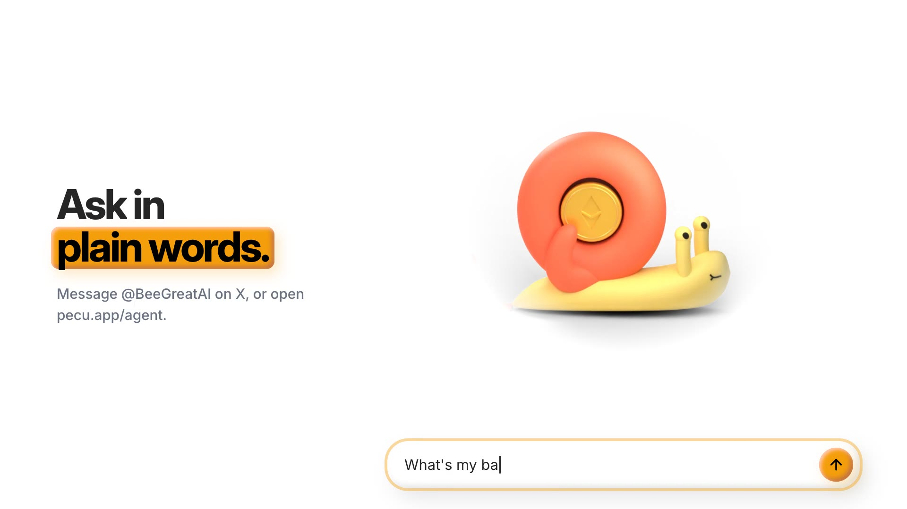
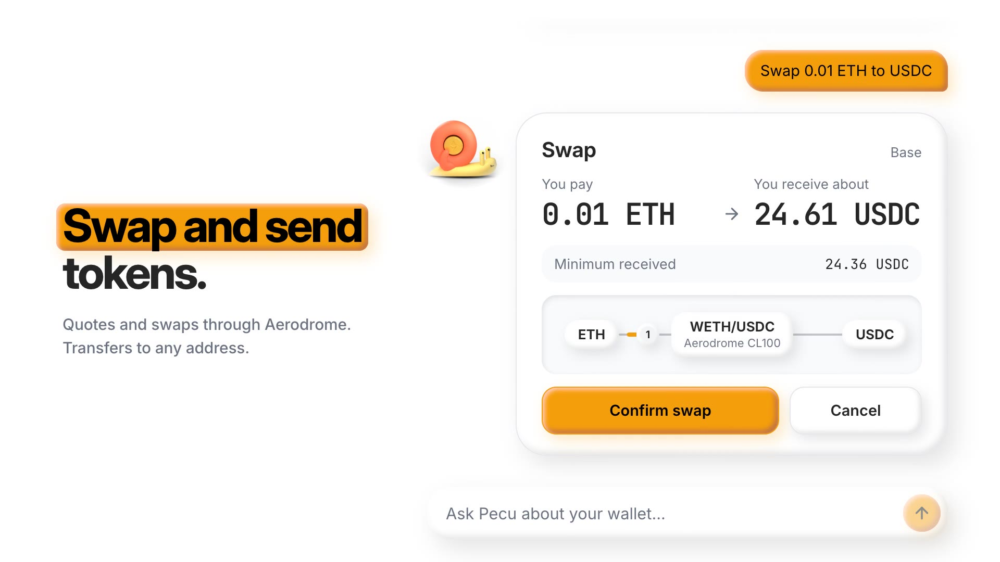
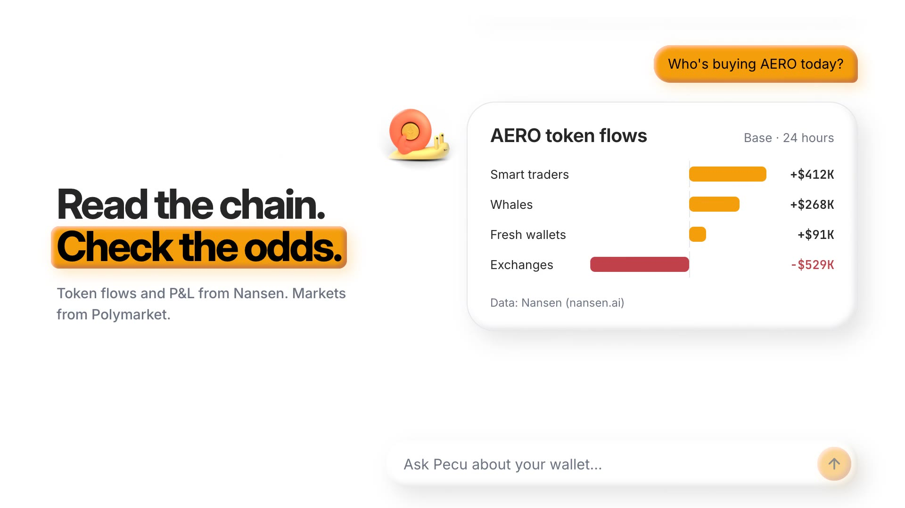
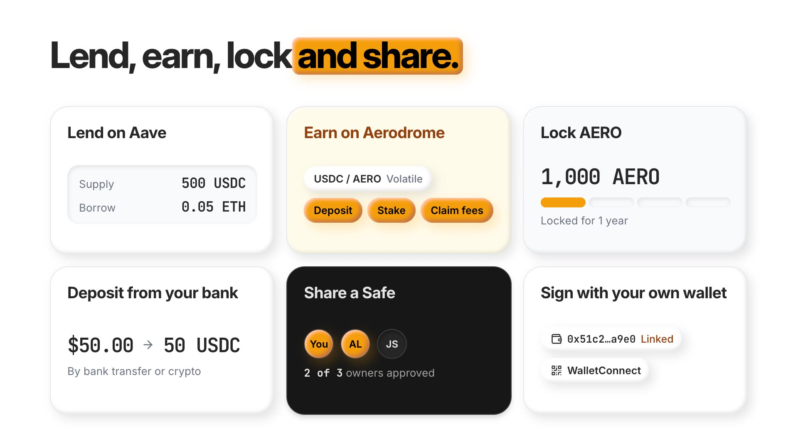
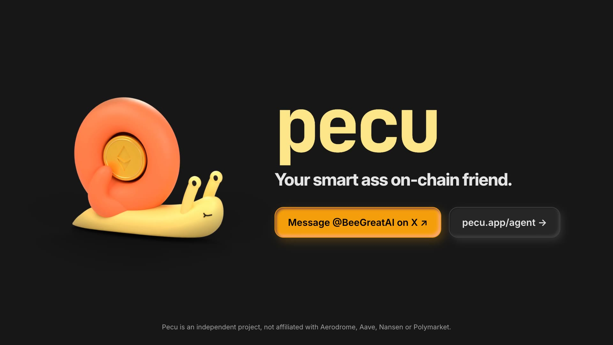

Pecu explainer video
What it shows
| 0:00 | The homepage snail writes "Pecu". Line: "An AI agent with a wallet on Base." |
| 0:04 | The snail walks into the web agent and becomes the chat avatar. "What's my balance?" returns the wallet card. Where to find Pecu: @BeeGreatAI on X, or pecu.app/agent. |
| 0:09 | "Swap 0.01 ETH to USDC": amount-led preview, the ETH → Aerodrome pool → USDC route with the amber comet, one tap to Confirmed on Base. |
| 0:14 | A 50/30/20 basket of NVDAc, AAPLc and TSLAc paid in USDC. |
| 0:18 | Nansen token flows for AERO, then Polymarket odds in the same thread. |
| 0:23 | Bento: Aave lending, Aerodrome liquidity, AERO lock, bank deposit, a shared Safe, a linked wallet. |
| 0:27 | The Safe tile opens into the dark closing frame: idle snail, wordmark, "Your smart ass on-chain friend.", both calls to action and the non-affiliation line. |
Frames





How it's built
- Remotion 4.0.526 project in
apps/pecu/apps/video. Every frame is React and TypeScript driven byuseCurrentFrame(). - It imports
theme/theme.css,theme/clay.cssand the bundled Inter and JetBrains Mono. The layout sits on a 960×540 canvas zoomed 2×, so type, radii and clay shadows keep their product values. - Motion uses the design system's curves:
cubic-bezier(.23,1,.32,1)for entrances,(.77,0,.175,1)for movement, the homepage 480 ms / 60 ms tile stagger, and the route timings from the transaction card. - The soundtrack is synthesized by
scripts/sound.ts: mallets, pad, bass, kick, typing ticks, bloops and a chime. Picture and sound both readsrc/timeline.ts, so every cue lands on its frame. Mastered to −16 LUFS, −1.9 dBFS peak. - All balances, prices, flows and odds are fictional fixtures.
Re-render
bun run --cwd apps/pecu/apps/video render # out/pecu-explainer.mp4 bun run --cwd apps/pecu/apps/video stills 12.9 # single frames for review bun run --cwd apps/pecu/apps/video studio # Remotion Studio
Notes
- Rendering is pinned to Chrome's ANGLE backend. The default software backend drew a 1 px red fringe around any clay shadow that was fading in.
- Remotion is free for individuals and companies of up to three people. A larger company needs a Remotion company license.
- Nothing is deployed and nothing is committed yet.